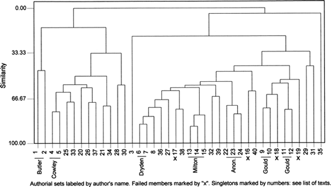
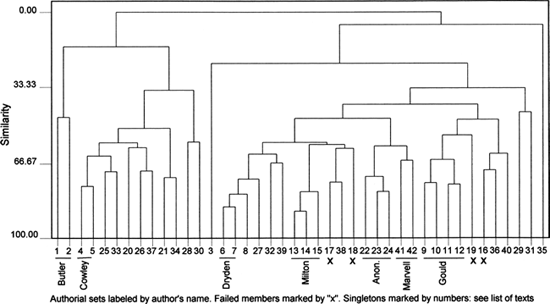
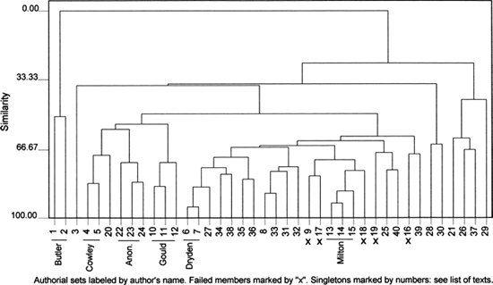
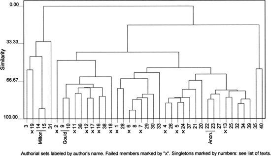
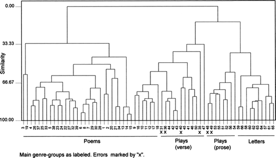
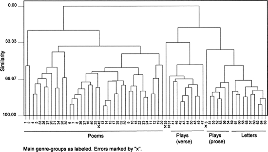
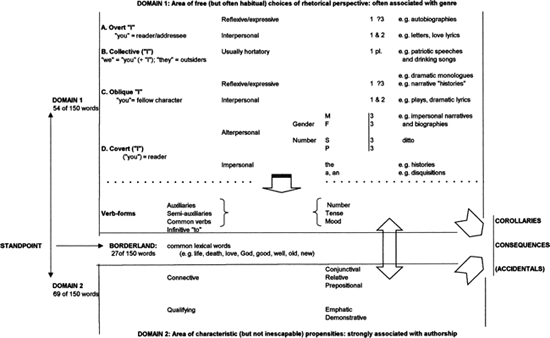
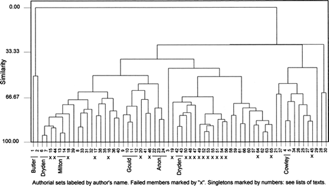
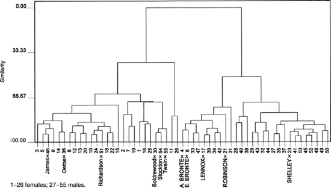

23.
Textual Analysis
John Burrows
Preamble
The object of this paper is to show that computer-assisted textual analysis can be of value in many different sorts of literary inquiry, helping to resolve some questions, to carry others forward, and to open entirely new ones. The emphasis will not be on the straightforward, albeit valuable, business of gathering specimens of chosen phenomena for close study – the business of concordances and tagged sets. It will fall rather on the form of computational stylistics in which all the most common words (whatever they may be) of a large set of texts are subjected to appropriate kinds of statistical analysis.
Statistical analysis is necessary for the management of words that occur too frequently to be studied one by one. But why study such words at all? For those of a sufficiently ascetic taste, there is a certain intrinsic interest in considering why Henry Fielding should stand out among a host of others in his recourse to the plain man's very and the lawyer's inferential use of the conjunction for. And if the substance of Aphra Behn's love poetry is epitomized in her fondness for warm and soft, her slightly strident tone of voice can be heard in all and none and never. On a larger scene, my datasets uphold the belief that British writers still make more use of which and should than their American or Australian contemporaries. Australian writers, however, show a preference for we/our/us in contexts where their British and American counterparts would favor limy/me. A desire to avoid any appearance of immodesty or a desire for concealment within the herd?
But the real value of studying the common words rests on the fact that they constitute the underlying fabric of a text, a barely visible web that gives shape to whatever is being said. Despite a brave attempt made long ago (Bratley and Ross 1981), we have yet to find satisfactory ways of tracing the interconnections of all the different threads, as each of the common words occurs and recurs in the full sequence of a text. We are able, nevertheless, to show that texts where certain of these threads are unusually prominent differ greatly from texts where other threads are given more use. An appropriate analogy, perhaps, is with the contrast between handwoven rugs where the russet tones predominate and those where they give way to the greens and blues. The principal point of interest is neither a single stitch, a single thread, nor even a single color but the overall effect. Such effects are best seen, moreover, when different pieces are put side by side. That, at all events, is the case I shall present.
Classification of Texts
Analyses
To begin directly with the first of several case studies, let us bring a number of poems together, employ a statistical procedure that allows each of them to show its affinity for such others as it most resembles, and draw whatever inferences the results admit. For this purpose, I have taken forty specimens of seventeenth-century and early eighteenth-century English verse, as listed in Table 23.1. Many are excerpts from longer works but each of them exceeds two thousand words in length. While they range in date from 1633 to about 1733, most come from 1660–1700. While they run across the range of literary forms taken by long poems in that era, satire and epic figure prominently among them. The first twenty on the list are by poets whose other work contributes to the large, wide-ranging database listed in the Appendix. Seventeen of the second twenty are by poets whose work is not included there. Although the remaining three poems (nos. 22–24) are of doubtful authorship, they are usually attributed to Andrew Marvell, a member of the database. If these three are counted, notionally, as Marvell's, twenty of the forty poems form small authorial sets. The other twenty are independent pieces.
The actual data for analysis consist of word-counts, from each of the forty specimens, of 150 common words. The words themselves are the 150 most common in the aforementioned database of seventeenth-century verse. Such a list is more robust than one derived from a small, selective set of texts like the one we shall examine. The texts were prepared according to the same protocols as the main database. They were all modernized so as to remove the statistically misleading effects of seventeenth-century spelling. Contracted forms like don't and I've were expanded to allow full counts of the parent words. A few common words like so and that were tagged in such a way as to distinguish their main grammatical functions. With this preparatory work complete, the texts were subjected to our sorting and counting programs. The raw counts for each common word in each text were normalized as percentages of the total number of words in that text. The object is to avoid the tyranny of the larger numbers with texts of uneven length.
The chief analytical procedures employed for comparing texts on the basis of the relative frequencies of many common words all depend upon the logical principle of concomitant variation. The counts for each word are treated as variables on which each of the chosen specimens (the texts under examination) lies nearest to such others as it most resembles and furthest from those it least resembles. To take examples that will easily be appreciated, texts (like plays) where / and you occur unusually often are likely to differ in many ways from texts (like prose treatises) where the and a rise well above the norm. Texts of the former sort usually run high in the simpler auxiliary verbs and in many colloquial, speech-oriented forms of expression. Texts of the latter sort tend to be oriented towards the relationships among things and ideas rather than persons and often show high frequencies in the most common prepositions. Differences in level of discourse (as in the wide-ranging contrasts between Latinate forms like ascend and Germanic equivalents like go up); in genre (as between the past-tense verbs of retrospective narrative and the present tense of most disquisitory writing); and in historical provenance (as in the shift from thou to you) – all these and many more are reflected in systematic relationships among the frequencies of the very common words.
Table 23.1 Forty long poems of the late seventeenth century
| *1 | 2586 Butler, Samuel | Hudibras, Canto III |
| #2 | 2208 | Upon the Imperfection … of Human Learning, Parts I & II. 1–72 |
| *3 | 3373 Cotton, Charles | A Voyage to Ireland in Burlesque, Cantos 2 and 3 |
| #4 | 3004 Cowley, Abraham | The Plagues of Egypt, 1–262 |
| #5 | 6812 | Davideis, Book II |
| *6 | 7824 Dryden, John | Absalom and Achitophel |
| *7 | 19896 | The Hind and the Panther |
| *8 | 7817 D'Urfey, Thomas | The Malecontent |
| #9 | 6020 Gould, Robert | To the Society of the Beaux Esprits |
| #10 | 4019 | The Play-House. A Satyr, Part II |
| #11 | 4057 | A Satyr against Man, Part I |
| #12 | 4492 | Presbytery Rough-drawn. A Satyr |
| *13 | 27154 Milton, John | Paradise Lost, lines 201–500 of each Book |
| *14 | 15694 | Paradise Regained |
| *15 | 12885 | Samson Agonistes |
| *16 | 2210 Oldham, John | Satyr II |
| *17 | 3378 | The Eighth Satyr of Monsieur Boileau Imitated |
| *18 | 3381 Swift, Jonathan | On Poetry: A Rhapsody |
| *19 | 3206 | Verses in the Death of Dr. Swift, D. S. P. D. |
| *20 | 2606 Waller, Edmund | Instructions to a Painter |
| #21 | 3547 Addison, Joseph | The Campaign |
| *22 | 2867 Anon. | The Second Advice to a Painter |
| *23 | 3638 | The Third Advice to a Painter |
| *24 | 7693 | Last Instructions to a Painter |
| *25 | 11111 Billingsley, Nicholas | The World's Infancy |
| #26 | 6986 Blackmore, Richard | King Arthur, Book I |
| *27 | 3892 Caryll, John | Naboth's Vineyard |
| #28 | 3617 Chamberlayne, Willi | Pharonnida, Book I, Canto 1 |
| #29 | 2743 Chudleigh, Mary | On the Death of his Highness the Duke of Gloucester |
| #30 | 5167 Davenant, William | Gondibert, Book I, Cantos 1 and 2 |
| #31 | 3892 Duke, Richard | Paris to Helena |
| #32 | 5935 Fletcher, Phineas | The Purple Island, Cantos I and II |
| #33 | 8797 Heyrick, Thomas | The New Atlantis, Parts I and II |
| #34 | 3731 Parnell, Thomas | Homer's Battle of the Frogs and Mice, Books I-III |
| *35 | 3103 Pordage, Samuel | The Medal Revers'd |
| *36 | 3250 Thompson, Thomas | Midsummer Moon |
| *37 | 2287 Tutchin, John | A Search after Honesty |
| *38 | 4374 Vaughan, Henry | Juvenal's Tenth Satire Translated |
| *39 | 2156 Wase, Christopher | Divination |
| *40 | 3321 Wild, Robert | Iter Boreale |
| Texts are complege except where specified. Texts marked* are from original or standard modern editions. Those marked # are from the Chadwyck-Healey Archive of English Poetry, to which my university subscribes. The texts were used only for the extraction of word-counts. | ||
When any large group of texts is analyzed, such manifestations of concomitant variation as these yield complex but intelligible patterns of affinity and disaffinity. They are much enriched, moreover, by the many exceptions that arise. Some of these are associated with authorial idiosyncrasies. The possible combinations from genre to genre, era to era, author to author, text to text, are almost unlimited. Effects like these, we may suppose, impinge upon the minds of good readers as part of their overall response. But they are not easy for a reader to articulate. Statistical analysis, on the other hand, offers clear but comparatively unsubtle ways of representing them.
The main analytical procedure to be employed in this chapter is that of cluster analysis, chosen because it offers rather a harsh test of the questions to be considered and also because the "family trees" in which the results are displayed speak plainly for themselves. The procedure is put to excellent use in a recent study of prose fiction. (See Hoover 2002.) The principal disadvantage of cluster analysis is that the underlying word-patterns are not made visible and must therefore be approached in other ways. For those who are versed in these matters, I should add that the statistical package used for these cluster analyses is MINITAB. My many trials suggest that, for such data as we are examining, complete linkages, squared Euclidean distances, and standardized variables yield the most accurate results. This pattern of preferences avoids any undue smoothing of data whose inherent roughness reflects the complexities of the language itself. This pattern, at all events, is used throughout.
Figure 23.1 represents the outcome of a cluster analysis in which our forty texts are compared with each other on the basis of the full list of the 150 most common words. It should be studied from the base upwards, taking account of the way the clusters form. The texts are identified, along the horizontal base of the figure, by the numbers attached to them in Table 23.1. The true affinities are not between entries that merely stand beside each other before separating, like nos. 2 and 4, but between those that form unions, like nos. 4 and 5. The closest affinities of all are between those pairs that unite soonest, like nos. 13 and 14, and those trios that do so, like nos. 13, 14, and 15.
The most obvious feature of Figure 23.1 is that some of its members are so slow to form any union at all. The isolation of no. 35, Samuel Pordage's satire The Medal Revers'd, can readily be shown to rest on an unusual preponderance of verbs couched in the present tense. They reflect the rhetorical stance of an ostensibly philosophic observer of affairs. No. 3, Charles Cotton's A Voyage to Ireland in Burlesque, is isolated by its narrative mode and its colloquial speech-register. When it does finally form an affinity, it is not with the epic and heroic poems to its left but with the loose group, chiefly made up of satires, lying to its right. And even though nos. 1 and 2, the highly idiosyncratic satires of Samuel Butler, differ markedly from each other, they stand even further apart from all the rest.
Considered more broadly, Figure 23.1 shows a rough differentiation between the earlier-and later-born poets, with the work of the latter lying towards the right. Near the right-hand extremity, for example, the poems of Gould, Swift, Duke, and Lady Mary Chudleigh make comfortable enough chronological neighbors while Butler, Cowley, Billingsley, and Waller are well placed at the left. But this incipient pattern is severely damaged by the genre-differentiation already noted. On a. chronological basis, Blackmore (no. 26), Addison (no. 21) and Parnell (no. 34) have no place on the left while Vaughan (no. 38) and Phineas Fletcher (no. 32) lie much too far to the right. The location of Milton's three poems (nos. 13–15) is anomalous in both chronology and genre.
Of the seventeen poems that make up authorial sets, only four fail to reveal their true authorial affinities. The three that are thought to be Marvell's form another little set. (In the case of Robert Gould, whose quartet forms two pairs, the success of the cluster analysis is incomplete.) Since the members of each authorial pair are locating their proper partners from a field of thirty-nine, the odds against the chance achievement of such a success rate are immense. Moreover, as readers who know these forty poems will be aware, the three anonymous painter-satires (nos. 22–24) are the only set where the effects of genre and authorship might be thought to work entirely in unison. The two Dryden poems, for instance, have little in common but their authorship; and Samson Agonistes differs markedly in genre from Milton's epics.
Figure 23.2 is specifically designed to show why the painter-satires form a trio. It is constructed in exactly the same fashion as Figure 23.1 save that two extra specimens have been added. They are two of Andrew Marvell's best-known poems, Upon Appleton House (no. 41) and The First Anniversary of the Government under 0. C. (no. 42). At 4,845 and 3,131 words respectively, they are of appropriate length for the comparison. And they differ markedly in genre from each other and from the painter-satires. In Figure 23.2, it will be seen that they form an additional authorial pair and that this pair unites with the trio of painter-satires. As in Figure 23.1, furthermore, the target of the painter-satires, Edmund Waller's Instructions to a Painter stands well away from them. Marvell's likely authorship of these three painter-satires is a matter of some importance in literary history. It is pursued more thoroughly in a new article to be submitted to The Yearbook of English Studies. For our present purpose, however, Figure 23.2 makes a more general point. With the addition of the two Marvell pieces and the uniting of the Gould quartet, Figure 23.2 surpasses the strong result achieved in Figure 23.1. The 150 most common words of our main dataset can clearly be said, therefore, to offer a useful basis for testing the authorship of long poems of the late seventeenth century. The possibility that this outcome might be a statistical artifact is easily set at rest: other methods of analyzing these data yield equally accurate results.
If the word list is progressively truncated from the bottom, much shorter poems can be tested for authorship. Although the rate of success diminishes as the texts grow shorter, it still far exceeds the rate of chance success. A study of this topic (Burrows 2002a) has recently been published. But a selective word list can be constructed in other ways. Is it possible to achieve similar levels of success more economically, working with only a chosen subset of our 150 most common words? After making many attempts, varying in rigor and subtlety but without conspicuous success, as reported elsewhere (Burrows 2003: 21–3), I chose a plainer path. In Table 23.2, the 150 most common words are dispersed in three subsets. The 54 words of "domain 1" comprise the principal referential markers, namely the definite and indefinite articles and the personal pronouns, to which are added the infinitive particle to and those common verb-forms whose inflections differ in association with the articles and pronouns. The 69 words of "domain 2" comprise the common connectives (including conjunctions, prepositions, and relative pronouns) and the common intensifiers, whether adjectives or adverbs. The descriptive adjectives, however, are put aside with the nouns among the 27 words excluded as too lexical, too subject-oriented, to be valid markers of more formal differences. A close student of Table 23.2 will detect at least two cases, art and own, where I have sought the less bad compromise. The former is included in "domain 1" on the ground that, in seventeenth-century verse, its role as an auxiliary verb is more potent than its role as an abstract noun. The latter is excluded on the ground that it is used less often as a verb than as an adjective. Such is the wealth of our data that a few arguable choices have little impact on the analyses.
Table 23.2 Experimental classification of the 150 most common words of the main dataset
| "Domain 1":54 words | "Domain 2":69 words | Exclusions: 27 words | ||
|---|---|---|---|---|
| 1 the | 79 do | 2 and | 71 there | 64 love |
| 4 a | 80 should | 3 of | 72 some | 70 great |
| 5 to (i) | 82 let | 6 in (p) | 73 too | 92 own |
| 7 his | 83 make | 8 with | 74 how | 100 first |
| 10 is | 84 could | 9 to (p) | 76 one | 101 men |
| 12 he | 86 must | 11 but | 77 never | 103 man |
| 14 I | 87 an | 13 all | 81 though | 106 heaven |
| 15 it | 90 us | 16 as | 85 those | 108 good |
| 17 their | 93 thee | 19 not | 88 where | 111 well |
| 18 her | 94 made | 23 for (p) | 89 still | 114 long |
| 20 be | 95 has | 24 by (p) | 91 here | 115 old |
| 21 you | 96 see | 27 from | 97 these | 116 day |
| 22 they | 122 art | 28 that (rp) | 98 before | 121 heart |
| 25 my | 124 give | 29 or | 99 thus | 123 wit |
| 26 we | 128 know | 33 this | 102 every | 126 world |
| 30 our | 129 find | 34 when | 104 whose | 130 fate |
| 31 thy | 131 its | 37 at | 105 out | 132 eyes |
| 32 was | 137 been | 38 which (rp) | 107 much | 133 life |
| 35 are | 146 come | 39 no (aj) | 109 while | 134 vain |
| 36 your | 40 what | 110 so (c) | 135 power | |
| 43 will (v) | 41 so (ad) | 112 each | 139 God | |
| 45 can | 42 that (d) | 113 only | 140 soul | |
| 46 have | 44 on (p) | 117 once | 141 new | |
| 47 she | 49 more | 118 through | 142 fair | |
| 48 thou | 50 if | 119 up (ap) | 147 time | |
| 51 did | 53 now | 120 both | 148 name | |
| 52 would | 54 who (rp) | 125 till | 150 last | |
| 57 had | 55 that (c) | 127 ever | ||
| 60 him | 56 yet | 136 down | ||
| 66 may | 58 then | 138 whom | ||
| 67 shall | 59 such | 143 upon (p) | ||
| 68 me | 61 nor | 144 whilst | ||
| 69 were | 62 for (c) | 145 since | ||
| 75 does | 63 like (p) | 149 over | ||
| 78 them | 65 than | |||
| Abbreviations: (p) = preposition (i) = infinitive (c) = conjunction (rp) = relative pronoun (v) = verb (ap) = adverbial particle (ad) = adverb of degree (aj) = adjective (d) = demonstrative |
||||
Figure 23.3 is a cluster analysis of our original set of forty poems using only the 69 words of "domain 2." As a test of authorship, it offers much the same result as the full list of 150 words used earlier. The members of the Oldham and Swift pairs still stand apart from their fellows. The Gould poems now fall into a trio and a singleton instead of the two pairs of Figure 23.1 or the quartet of Figure 23.2. The other authorial sets hold firm. On closer study, however, it can be seen that Figure 23.3 surpasses both its predecessors because the various groups form much more quickly. For testing the authorship of this large group of poems, "domain 2", therefore, is more economical of data and more efficient in operation than the full list of 150 words.
It goes almost without saying that, if these 69 words can match or outmatch the full set, the omitted words must shed little light on authorship. Figure 20.4 is the counterpart of Figure 23.3, taking the 54 words of "domain 1" as its basis. Two of the three Milton poems, two of the three painter-satires, and two of the four Gould poems still unite with their respective fellows. But where we had four or five errors out of twenty, we now have fourteen. Since this pattern is certainly not author-driven, the question is whether other inferences can be drawn. A close study of the way the poems cluster offers rough but suggestive distinctions between predominantly monologic, dialogic, narrative, and reflective forms of rhetoric. Since we are working exclusively with referential markers and inflected verbs, this seems a plausible result. But the genre-differences in the poetry of the Restoration era are too subtle and too impure to allow any firm conclusions to be drawn from this one analysis.
To pursue the hypothesis that "domain 1" may indeed be genre-driven, I have accordingly added a further 26 specimens, as listed in Table 23.3 – Some 16 of them (nos. 41–56) are selections from plays of the period. Most of the plays are represented by a single Act but there are cases where other considerations call for a choice of scattered scenes. (Both Rochester and Waller, for example, contributed scenes to plays by other dramatists.) Among the plays, the first ten selections are of verse drama. The next four are of prose drama and the last two, both from Southerne's The Fatal Marriage, include both verse and prose. Of the dramatists included, Dryden, Rochester, Stapylton, Congreve, and Southerne offer authorial pairs within their respective subsets. Sedley and Shadwell make it possible to test dramatic authorship across the differences between verse and prose. While these 16 specimens of drama are too few to be representative, they may suffice for an instructive comparison with the poetry and the personal letters of their day.
Table 23.3 Twenty-six additional texts
| Sixteen excerpts from plays of the late seventeenth century | ||
| Verse plays | ||
| *41 | 2918 ?Dorset, Charles Sackville, Earl of | Pompey the Great, Act II |
| *42 | 7133 Dryden, John | The Siege of Granada, Act I.i, Act V.i-ii |
| *43 | 4955 | Tyrannic Love, Acts I-II |
| *44 | 7870 Rochester, John Wilmot, Earl of | Valentinian, replacement scenes |
| *45 | 2106 | The Walls of China, a contributed scene |
| *46 | 3177 Sedley, Sir Charles | Antony and Cleopatra, Act I.ii, Act III.i |
| *47 | 2304 Shadwell, Thomas | Psyche, two scenes |
| #48 | 7817 Stapylton, Sir Robert | Hero and Leander, Act II |
| #49 | 3764 | The Slighted Maid, Act III |
| *50 | 4980 Waller, Edmund | The Maid's Tragedy, replacement scenes |
| Prose plays | ||
| #51 | 5612 Congreve, William | Love for Love, Act IV |
| #52 | 5334 | The Way of the World, Act IV |
| #53 | 5303 Sedley, Sir Charles | Bellamira, Act III |
| *54 | 6144 Shadwell, Thomas | The Libertine, Act III |
| Prose and verse | ||
| *55 | 3732 Southerne, Thomas | The Fatal Marriage, Act III |
| #56 | 4082 | The Fatal Marriage, Act IV |
| Ten sets of letters from the late seventeenth century | ||
| *57 | 9615 Conway, Anne Finch, Lady | Letters to her husband |
| *58 | 5058 King, William, Archbishop of Dublin | Letters to Jonathan Swift |
| *59 | 5545 Montagu, Lady Mary Wortley | Letters to Edward Montagu (before marriage) |
| *60 | 5969 More, Henry | Letters to Anne, Lady Conway |
| *61 | 8113 Osborne, Dorothy | Letters to William Temple (before marriage) |
| *62 | 7193 Rochester, John Wilmot, Earl of | Letters |
| *63 | 6251 Savile, Henry | Letters to Rochester |
| *64 | 8948 Swift, Jonathan | Letters to Esther Vanhomrigh ("Vanessa") |
| *65 | 8730 Swift, Jonathan | Letters to Archbishop King |
| *66 | 5418 Vanhomrigh, Esther ("Vanessa") | Letters to Jonathan Swift |
| Texts are complete except where specified. Texts marked* are from original or standard modern editions. Those marked # are from the Chadwyck-Healey Archive of English Poetry, to which my university subscribes. The texts were used only for the extraction of word-counts. | ||
The other ten specimens (nos. 57–66) are selections from the personal letters of some well-known figures of the period. All the letters within each set except for Rochester's are directed to a particular recipient. Two sets of Swift's letters are included to display the possible diversity of an epistolary repertoire.
Whereas only tentative conclusions could be drawn from Figure 23.4, Figure 23.5 uses the 54 words of "domain 1" to quite striking effect. Some 90 percent of our 66 specimens form genre-based clusters. All ten sets of personal letters form a cluster of their own, at the extreme right. Thirty-eight of the forty poems lie to the left of any other specimens. Twenty-nine of them form one large cluster at the left with another seven clustering to their immediate right. The rest are located among the verse-plays and are marked as errors. Two verse plays are marked as errors because they cross into the remaining cluster, where they join the prose plays and the two plays in which prose and verse are mixed.
From another, simpler perspective, Figure 23.5 is composed of three large clusters. To the left is a set made up entirely of poems. In the middle is a set uniting some poems of a dialogic cast with verse drama, obviously their close kin. To the right is a set of sixteen prose specimens and two stray pieces of verse drama (nos. 48 and 49). These last, both extracts from little-known plays by Sir Robert Stapylton, are couched in what has aptly been described (Sutherland 1969: 43) as "an easy and colloquial blank verse." Why do they cross the border between verse and prose? The best explanation, I believe, is that Stapylton favors a dialogue of brief, deictic interchange and only rarely offers a large, poetic set-speech. In an analysis based principally upon pronouns and auxiliary verbs, this tendency carries his plays towards the prose drama of the period.
That explanation is supported by Figure 23.6, where the full list of 150 words is employed in an analysis of the same 66 specimens. The richer word list, less strongly influenced by I/thou, places Stapylton correctly in the cluster composed entirely of verse drama. No. 45, Rochester's highly poetic contribution to Sir Robert Howard's verse drama The Walls of China, is now misplaced among the 37 poems that make up the main cluster. Three poems (nos. 31, 35, and 3), which have previously shown little affinity for the others, are now misplaced among the plays. Every other entry is correctly placed in a tripartite distribution of the texts according to their genre.
The foregoing series of analyses shows many points of interest. One of the more unexpected offers special food for thought. When we compared Figure 23.1 and Figure 23.3, we saw that the selective word list, though scarcely less accurate than the full list, was more economical and more efficient. In the corresponding case, Figure 23.5 does offer a somewhat less accurate separation of literary genres than Figure 23.6. Yet Figure 23.5 is much more economical than Figure 23.6 in its use of data and its clusters form more speedily. If the 69 words of "domain 2" and the 54 words of "domain 1" compare so favorably with the full list of 150 words as indicators of authorship and genre respectively, we do well to seek an explanation.
Rationale
As a first step, the case for excluding the most common lexical words from such analyses because they are too subject-oriented is well understood and widely practiced. Even in the upper reaches of the frequency hierarchy, the lexical words favored by different authors are sometimes idiosyncratic, sometimes those of a coterie. The Christian vocabulary of seventeenth-century devotional verse stands out in contrast, for example, to the obscene vocabulary that marks the clandestine verse of Rochester and his circle: some words of both kinds rank very high in appropriate texts. We do not need a computer to determine that the obscene farce, Sodom, is unlikely to be the work of Henry Vaughan. And even if it were, a quite uncharacteristic set of lexical words would act only as a disguise. Since such problems cannot validly be addressed by picking and choosing among the lexical words, it is best to treat them all alike and to recognize what one is doing. And, though the boundary between lexical and function words is inexact, the upper end of the frequency range includes very few hard choices. On this basis, 27 words can be excluded from our list of 150.
A good case can also be made for excluding the personal pronouns because they are too volatile in frequency to serve as reliable measures. If that is done, the question of the inflected verbs arises with some force. It would obviously be logical to exclude them too. But by now the increasing sacrifice of information must occasion serious concern. These three excisions would take out 81 words from the 150 of the list we have been using. A desirable rigor would be obtained at a disturbing cost.
The results already offered illustrate what follows when the 27 most common lexical words are set aside while the common function-words are all retained but are separated into two "domains." Figure 23.7 represents an attempt to understand the difference between these notional domains. Anybody who sets about a piece of writing may be thought of as beginning at the standpoint marked at the extreme left of the figure. Even at that point, such a person is too much a creature of habit and background to begin with a clean slate. Even at that point, such a person will also have some notion of a subject, an intended audience, and an attitude to that audience. And, although the writer retains a good deal of latitude as the work proceeds, these broad constraints begin to strengthen from the moment the very first words are written: "Of Man's first disobedience … "; "The glories of our blood and state… "; "It is a truth universally acknowledged… "; "She waited, Kate Croy… "; "My father had a small estate in Nottinghamshire; I was the third of five sons… "; "When I consider how my light is spent… "; "I wandered lonely as a cloud… "; "Shall I compare thee to a summer's day… "; "Believe't, I will.//Thy worst. I fart at thee."
The authorial I of a text is ever-present though not always visible. That I, of course, cannot simply be identified with the writer in propria persona. But four of the many roles open to that I govern the categories set out in the upper part of Figure 23.7. In category A, an I not easily distinguished from the author engages in some form of direct address to a real or putative reader. Such work need not be disingenuous. Samuel Johnson offers a celebrated warning about the deceits of epistolary correspondence and when Lady Mary Pierrepont tells her future husband, Edward Wortley Montagu, "I am going to write you a plain long letter" (Halsband 1970: 41), only the warning signs are plain. (He did not heed them.) The I of category A usually occurs freely and carries a select group of verbal inflections along with it. The thou/you who is addressed may occur just as freely but may also remain inexplicit. T. S. Eliot distinguishes the pulpit-rhetoric of Donne from that of Lancelot Andrewes on pertinent lines: whereas the former is always in his pulpit, addressing his congregation, the latter "is wholly in his subject, unaware of anything else" (Eliot 1932: 341). While the comparative frequencies of the relevant pronouns, articles, and verbs in their sermons are not what engages a reader, they show the force of Eliot's distinction.
In category B, both the authorial I and the you of the addressees are absorbed into the we of a real or notional group. They is assigned to outsiders, whether feared, pitied, or admired. When these plural forms predominate, the singular pronouns and verbs all drop away in frequency. Winston Churchill's "We will fight them on the beaches … We will never surrender" takes the hortatory form. The elegiac form is taken by Lawrence Binyon's Armistice hymn, For the Fallen: "They shall grow not old / As we that are left grow old."
In category C, the authorial I is displaced by the deictic I of whichever character, dramatic or fictional, is speaking at a given time. In plays, accordingly, Thou/you is reserved for the characters then addressed. All of the personal pronouns are free to occur but I/thou/you usually predominate. The present tense verb-forms are usually in the ascendant. In the retrospective narrative "histories" that either constitute or are interpolated in many novels, especially those of the eighteenth and nineteenth centuries, I is customarily the highly visible property of the present speaker. (Whereas Lemuel Gulliver always holds the center of his stage, Henry Fielding's Man of the Hill and Mrs Fitzpatrick or his Miss Mathews, Captain Booth, and Mrs Bennet take turns at being /.) Thou/you may either be reserved for fellow characters or extended to include us "Gentle Readers." Both he and she are likely to occur almost as freely as /, being devoted to those others who took part in the events now recounted. Except in those retrospective narratives where the historic present tense is adopted as a rhetorical strategy, most verbs are couched in the past tense.
In the many and varied forms of writing composing category D, neither I nor you need ever occur, most other pronouns may be rare, and the articles are likely to be the chief referential markers. Among the third-person pronouns, it and they are likely to predominate. And though historical writings are often more personally oriented than most treatises and disquisitions, they do not often find much use for the feminine pronouns. It might be interesting to ascertain whether a flurry of feminine pronouns could be found in any part of Gibbon's great history except the chapter treating the notable exploits of the Empress Theodora. She is certainly one of the only two women named in the extensive titles of his 71 chapters. Modern feminist historians are busy redressing the imbalances of the past, and altering the incidence of pronouns as they do so.
With Henry Fielding's novels among my examples, Gentle Reader, I could not easily forget that many of the literary forms I have referred to, and the novel in particular, can draw on the resources of more than one of my categories. When this occurs, of course, the pattern of pronouns, articles, and auxiliary verbs is bound to be modified. My short list of distinguishable literary forms is only a scanty representation of the more obvious classes. And I am well aware that, in broadening its field of reference in recent years, the word genre has lost its former rigor. Its over-extension can be seen when it is applied, for example, to personal letters, a whole family of loosely related literary forms.
With all due allowance for these reservations, Figure 23.5 still indicates that some major genre-divisions can indeed be differentiated by the statistical analysis of a select word list confined to pronouns, inflected verbs, articles, and the infinitive particle. This last acts as a marker of complex verbal compounds, often couched in the first person, in which the speaker stands back a little from the action encompassed in the main verb and expresses a self-conscious attitude to it. "I hoped/feared/wished/chose to…" and many other forms like them typify a usage which is remarkably common in some writers, Butler and Rochester among them, and which offers us an easy transition from domain 1 to domain 2.
From the standpoint at the left of Figure 23.7, as a writer moves forward with the emerging text, the choices made in domain 1 interweave with those of domain 2. Here, however, the more open choices of domain 1 are outweighed though not extinguished by the constraints of upbringing and habit. Predisposition or idiosyncrasy? The syntactical forms by which a writer's ideas are connected and the forms of emphasis a writer chooses all offer a new battleground for ancient debates about the nexus between idiosyncratic and socially influenced facets of our behavior. If social factors were all that mattered, it would be hard to explain why men of such different backgrounds as Defoe and Henry Fielding should far outrank their contemporaries in the use of so commonplace a word as very. If idiosyncrasy were all that mattered, it would be hard to explain why, nearly three centuries later, that same word should act as a statistically significant differentia between a large set of Australian writers and their British and American fellows. Contrasts in socially imposed roles may well explain why not, but, and never are statistically significant differentiae between large sets of female and male writers of the eighteenth and nineteenth, but not the twentieth centuries. They do not explain why Dryden and Gould should stand out among their contemporaries in their use of before and there respectively.
Whether they originate in idiosyncrasy or in upbringing, such authorial habits are strong enough and consistent enough to allow the 69 words of domain 2 to act as effective authorial discriminators among the forty poems of Figure 23.3 – Although cluster analysis rests upon combinations of many word-frequencies, it is possible to pick out some of the more striking. Rochester is much given to who and whose and ever, Marvell to yet and where and only. Dryden and Congreve make uncommonly frequent use of thus. Of while and whilst, Marvell and Dryden lean to the former whereas Aphra Behn prefers the latter. Whereas both Dryden and Milton prefer on to upon, Samuel Butler goes the other way. As these last examples suggest, the words to which particular writers have more recourse than most are matched, as discriminators, by words that they eschew.
Provided the texts called into comparison are not too dissimilar in kind, such preferences among the common connectives and modifiers that constitute our domain 2 (or the corresponding "domain 2" of any other large database) can go far towards establishing the likely authorship of doubtful texts. And the notion of a writer finding a path forward by intermingling choices and habits helps to explain why this should be so. As the writer advances, the emerging shape of the text makes the basis of the stylistic corollaries and consequences indicated at the extreme right of Figure 23.7. Choices, constraints, further constraints following from each choice – and always some room for accident, whether inept or inspired.
But Figure 23.8 is an abrupt reminder that a writer's habits are not set in stone. It represents the outcome of a cluster analysis of the 66 texts of Table 23.1 and Table 23.3, using the 69 words of domain 2. Some 38 of the 66 texts are eligible as members of little authorial subsets: only 17 of them find their partners. Those 17 almost exactly match the successful unions of Figure 23.3 and include, in addition, the two specimens of Dryden's verse drama (nos. 42 and 43). Samson Agonistes (no. 15) has moved away from the other Milton entries, but the previously misplaced Gould entry (no. 9) has rejoined the other three. Dryden's verse drama apart, the eligible specimens from among the additional texts not only fail to achieve a single cross-genre union but even fail to find their partners within the same genre. One interesting failure lies in Swift's two sets of letters (nos. 64–5), whose strikingly different recipients may explain why he can adopt such different styles. The two Acts from the same tragedy by Thomas Southerne (nos. 55–6) are distinguished from each other by their different proportions of subplot and main plot, prose and verse. The two specimens of Congreve's prose drama (nos. 51–2) are distinguished from each other by this dramatist's keen ear for different stylistic registers. The aristocrats of The Way of the World (no. 52) converse in a manner more akin to that of their peers in Sedley's Bellamira (no. 53) than that of the (not ill-spoken) cits and squires in Love for Love (no. 51).
But the strongest general contrast in Figure 23.8 is between prose and verse. Three specimens of verse drama by Rochester (no. 44), Sedley (no. 46), and – as it is thought – by Dorset (no. 41) lie among the large cluster of poems at the left. Another by Rochester (no. 45) lies among the poems at the right. In the middle of the whole group, ranging across from no. 52 to no. 65, the sixteen prose specimens form a slightly disordered but unbroken sequence. Even in domain 2, so it appears, strong differences of genre can smother authorial resemblance.
There is matter here for a searching, full-scale inquiry. Even a cursory study of the word-counts, however, is suggestive. The following examples are grounded on comparisons among the word-counts for four groups of texts: the 40 poems of Table 23.1; the 25 authorial sets that make up our main database of seventeenth-century verse; a large database of first-person narratives by 55 writers of prose fiction born between 1660 and 1860, the subject of the next main section of this chapter; and the ten sets of personal letters of Table 23.3. From an examination of these four large groups, I pick out the more striking contrasts between verse and prose and offer some small inferences.
Among the connectives, verse scores higher than prose for or and nor, the twin staples of many an antithesis, and for the preposition like, the prelude to simile. Verse scores higher for four of the five main relative pronouns, the exception being which. The embedded clauses customarily introduced by which (at least in British writing) may be less congenial to the flow of verse rhythms than the corresponding appended clauses. A number of monosyllabic connectives and semi-connectives may serve the metrical needs of many poets while offering the strong rhetorical pointing of Restoration verse argument. They include what, yet, now, such, too, still, while, whilst, and thus. Verse also runs to high scores in some absolute forms like all and no.
The prose set employed in these comparisons is too heterogeneous to yield examples of much interest. But it is certainly worth noting that some of our poets abandon some of their most pronounced verse habits when they turn to prose. Congreve and Swift stand out among the poets in their frequent recourse to thus and never respectively. In Congreve's prose drama and Swift's letters, their scores fall right away. Other poets, like Katherine Phillips ("Orinda"), maintain much the same stylistic repertoire through thick and thin. On/upon is a strong verse/prose discriminator, possibly because on has greater metrical versatility. Of the few poets much given to upon, Samuel Butler is celebrated not for a tin ear but for his mastery of offbeat rhymes and rhythms. In general, however, it seems that metrical necessities, rhetorical patterning, and a comparative dearth of circumstantial detail are among the factors that induce writers to assume rather different habits of connection and emphasis when they turn from verse to prose.
While the separation of domain 1 and domain 2 is obviously worth maintaining and deserves further investigation, it is not a Berlin wall but only an analytical convenience. The vigorous traffic in both directions represents an intermingling of stylistic forces. As a valuable sidelight in a study of doubtful authorship (Forsyth et al. 1999: 395–6), the writers make the point that an unduly ambitious analysis can collapse under its own weight. While something of that kind occurs in Figure 23.8, the outcome is not unintelligible. It is rather that some real authorial affinities are obscured when such extreme differences of genre supervene.
Classification of Authorial Groups
Genre and authorship are not the only powerful stylistic differentiae. A suitable choice of specimens allows other effects to be observed. Let us turn, for this purpose, to another large database. In its current state, it runs to 1.8 million words and consists entirely of first-person, retrospective narratives from works of prose fiction by 100 authors. The earliest born of the authors is Daniel Defoe (1660) and the latest is Louise Erdrich (1954). The later sets comprise American and Australian as well as British writings. Some 48 of the authors are female. The authorial sets range in length from 4,000 to almost 76,000 words and each includes at least three narratives. The small sets are included, perforce, in order to represent some authors of particular interest like Louisa Atkinson, who is accepted as the earliest native-born Australian writer. With a threshold of 4,000 words, however, the differences of size among the sets show no apparent effects. (The e-texts were created by keyboard from standard editions and from the admirable facsimiles of early British fiction published by the Garland Press, New York. Permission was obtained where necessary and the texts were used only for the extraction of word-counts.)
Earlier versions of this database have been used for a study of change over time (Burrows 1992) and a pilot study of national differences in the English of literary narrative (Burrows 1996). The former takes its place beside Cluett (1976) and other, more linguistically oriented work like Biber and Finegan (1989). The latter, unfortunately, still stands alone.
On the present occasion, developing work I presented at ACH/ALLC 1993 but have never published, the database will be used to examine possible differences between male and female writers. To this end, for reasons that will emerge, the database is divided between 55 authors born before 1860 and 45 born afterwards. The former subset includes 26 female writers, the latter 22. As Table 23.4 and Table 23.5 indicate, the female writers are placed first in each subset. (Most of the information offered in those tables speaks for itself. It should be noted, however, that, where a writer is given two nationalities, his or her "less influential" country of abode is shown in parentheses.)
Distribution tests like Student's /-test and the Mann-Whitney test are among the most appropriate procedures for assessing possible differences, over a range of many variables, between any two large sets of specimens. In both tests, the underlying assumption – the null hypothesis – is that the sets do not represent distinct populations. For each variable in turn, therefore, the results show the likelihood that the assumption is false. This likelihood, expressed as a degree of probability, takes the form of a decimal fraction like 0.05 or 0.005. The smaller this fraction, the more likely it is that the assumption is false. When the tests are conducted with many variables, they must be expected to yield some chance successes: around one result in twenty should be above 0.05; around one in a hundred should be above 0.01, and so on. With our 150 variables, therefore, we need many more than seven results from levels below 0.05, or many more than two from below 0.01 before we can begin to accept that there are systematic differences between our male and female writers, that they do indeed represent different populations. (We must also stiffen our stated requirement to allow for the fact that the "two-tailed" form of these tests, as used here, doubles the probability of a chance success.) To make the requirement still more rigorous, I have chosen, finally, to ignore results that do not satisfy both of the distribution tests at levels below 0.05.
As Table 23.6 indicates, there is no need to quibble about borderline cases. In the upper part of the table, labeled (a), the results for our 55 earlier-born authors include no fewer than 32 out of 150 where the probabilities fall below 0.05. Almost all of them, in fact, fall far below that threshold. In the lower part of the table, labeled (b), the results for our 45 later-born authors lie well within the realm of chance, with only six words yielding probabilities from below the 0.05 threshold. Taken together, the two sets of results indicate that, in our earlier but not our later set, the male and female authors represent different populations. Whereas men and women used to write very differently from each other, they have long since ceased to do so.
In Table 23.6, the columns headed "/-score" and "DF" represent a different way of expressing the same probabilities from those shown in the column headed "/-prob." (The discriminatory power of /-scores is established by consulting an appropriate manual of statistical tables.) My reason for including the /-scores here is that they distinguish between positives and negatives. The positive scores are always those of the first set entered – in this case, the set of female authors.
The contrasting scores for such referential markers as l/me/sbe/ber and, on the other hand, the/a point to a straightforward opposition between more and less personally oriented rhetorical stances among the two sets of earlier-born writers. The absence of any masculine pronouns makes this opposition a little more complex; and the opposed scores (albeit weak) for mother and man add to that effect. Female authors, it seems, had more to say of females: both male and female authors had much to say of males. For the substance of what they said, of course, one turns, with pleasure, to the texts themselves.
Table 23.4 Fifty-five authors born before 1860 (female authors listed first)
| 1 | 2 | 3 | 4 | 5 | 6 | 7 | 8 |
| Atkinson, Louisa | Austen, Jane | Braddon, Mary | Brontë;, Anne | Brontë, Charlotte | Brontë, Emily | Cambridge, Ada | Edgeworth, Maria |
| 1834– 72 A | 1775–1817 UK | 1837–1915 UK | 1820–49 UK | 1816–55 UK | 1818–48 UK | 1844–1926 UK(A) | 1767–1849 UK |
| 4005 | 8889 | 8269 | 22640 | 15644 | 15743 | 12266 | 29330 |
| 9 | 10 | 11 | 12 | 13 | 14 | 15 | 16 |
| "Eliot, George" | Fielding, Sarah | Freeman, Mary W. | Gaskell, Elizabeth | Hamilton, Elizabeth | Haywood, Eliza | Hearne, Mary | Jewett, Sarah O. |
| 1819–80 UK | 1710–68 UK | 1852–1930 US | 1810–65 UK | 1758–1816 UK | 1693?–1756 UK | fl. 1718 UK | 1849–1909 US |
| 22686 | 75982 | 6084 | 51989 | 16922 | 28633 | 12815 | 5985 |
| 17 | 18 | 19 | 20 | 21 | 22 | 23 | 24 |
| Lennox, Charlotte | Manley, Mary | Praed, Rosa | Radcliffe, Ann | Robinson, Mary | Scott, Sarah | Shelley, Mary | Smith, Charlotte |
| 1720–1804 (US) UK | 1663–1724 UK | 1851–1935 (A) UK | 1764–1823 UK | 1758–1800 UK | 1723–95 UK | 1797–1851 UK | 1749–1806 UK |
| 29037 | 15727 | 9147 | 12066 | 10891 | 15316 | 35806 | 28695 |
| 25 | 26 | 27 | 28 | 29 | 30 | 31 | 32 |
| Spence, Catherine | Stowe, Harriet B. | Bage, Robert | Becke, Louis | Bierce, Ambrose | "Boldrewood, Rolf" | Brockden Brown, C. | Clarke, Marcus |
| 1825–1910 (UK) A | 1811–96 US | 1728–1801 UK | 1855–1913 A | 1842–1914? US | 1826–1915 UK(A) | 1771–1810 US | 1846–81 UK(A) |
| 11538 | 10965 | 13969 | 9641 | 7745 | 17722 | 15923 | 13342 |
| 33 | 34 | 35 | 36 | 37 | 38 | 39 | 40 |
| Cleland, John | Collins, Wilkie | Cooper, James F. | Defoe, Daniel | Dickens, Charles | Favenc, Ernest | Fielding, Henry | Furphy, Joseph |
| 1709–89 UK | 1824–89 UK | 1789–1851 US | 1660–1731 UK | 1812–70 UK | 1845–1908 UK(A) | 1707–54 UK | 1843–1912 A |
| 12995 | 61539 | 5760 | 35317 | 8519 | 4762 | 75532 | 15532 |
| 41 | 42 | 43 | 44 | 45 | 46 | 47 | 48 |
| Godwin, William | Graves, Richard | Hardy, Thomas | Hawthorne, Nath'l | Holcroft, Thomas | James, Henry | Johnson, Samuel | Maturin, C. R. |
| 1756–1836 UK | 1715–1804 UK | 1840–1928 UK | 1804–64 US | 1745–1809 UK | 1843–1916 US | 1709–84 UK | 1782–1824 UK |
| 28814 | 23685 | 12867 | 18154 | 19628 | 33244 | 16943 | 16581 |
| 49 | 50 | 51 | 52 | 53 | 54 | 55 | 56 |
| Melville, Herman | Poe, Edgar A. | Richardson, Samuel | Scott, Walter | Smollett, Tobias | Stockton, Frank R. | "Mark Twain" | |
| 1819–91 US | c1809–49 US | 1689–1761 UK | 1771–1832 UK | 1721–71 UK | 1834–1902 US | 1835–1910 US | |
| 21084 | 10930 | 18615 | 29156 | 31746 | 13321 | 10142 |
Table 23.5 Forty–five authors born after 1860 (female authors listed first)
| 1 | 2 | 3 | 4 | 5 | 6 | 7 | 8 |
| Anderson, Jessica | Bedford, Jean | Bowen, Elizabeth | Carter, Angela | Cather, Willa | Erdrich, Louise | Franklin, Miles | Gardam, Jane |
| 1920?–99 A | 1946-(UK(A) | 1899–1973 UK | 1940–92 UK | 1873–1947 US | 1954-US | 1879–1954 A(UK) | 1928-UK |
| 12825 | 6463 | 11071 | 15642 | 12051 | 19565 | 16712 | 10470 |
| 9 | 10 | 11 | 12 | 13 | 14 | 15 | 16 |
| Grenville, Kate | Hazzard, Shirley | Hospital, Janette T. | Jolley, Elizabeth | Jong, Erica | Langley, Eve | Lurie, Alison | Mansfield, Katherine |
| 1950-A | 1931-A(US) | 1940?-A(US/ Can.) | 1923-UK(A) | 1942-US | 1908–1974 A | 1926-US | 1888–1923 NZ(UK) |
| 14482 | 10359 | 5700 | 12533 | 13545 | 13345 | 14287 | 10827 |
| 17 | 18 | 19 | 20 | 21 | 22 | 23 | 24 |
| Murdoch, Iris | Park, Ruth | Stead, Christina | Tennant, Kylie | Wharton, Edith | Wright, Judith | Barth, John | Bellow, Saul |
| 1919–99 UK | 1923?- NZ(A) | 1902–83 A(UK) | 1912–88 A | 1862–1937 US | 1915–2000 A | 1930-US | 1915-US |
| 21437 | 6755 | 10442 | 7112 | 19269 | 10012 | 12836 | 20342 |
| 25 | 26 | 27 | 28 | 29 | 30 | 31 | 32 |
| Boothby, Guy | Boyd, William | Carey, Peter | Cary, Joyce | Cowan, Peter | Doctorow, E. L. | Faulkner, William | Fowles, John |
| 1867–1905 (A) UK | 1952-UK | 1943-A | 1888–1957 UK | 1914-A | 1931-US | 1897–1962 US | 1926-UK |
| 13182 | 9871 | 24708 | 9936 | 13221 | 18701 | 21471 | 30394 |
| 33 | 34 | 35 | 36 | 37 | 38 | 39 | 40 |
| Greene, Graham | Hemingway, Ernest | Johnston, George | Joyce, James | Lawson, Henry | Lodge, David | Malouf, David | McEwan, Ian |
| 1904–91 A | 1899–1961 US | 1912–70 A | 1882–1941 UK | 1867–1922 A | 1935-UK | 1934-A | 1948-UK |
| 9184 | 14202 | 24729 | 6531 | 16056 | 8465 | 12261 | 18919 |
| 41 | 42 | 43 | 44 | 45 | |||
| Palmer, Vance | Porter, Hal | Sargeson, Frank | Waugh, Evelyn | Wells, H. G. | |||
| 1885–1959 A | 1911–84 A | 1903–82 NZ | 1903–66 UK | 1866–1946 UK | |||
| 13256 | 14274 | 10869 | 11380 | 50612 | |||
| Texts are complege except where specified. Texts marked* are from original or standard modern editions. Those marked # are from the Chadwyck-Healey Archive of English Poetry, to which my university subscribes. The texts were used only for the extraction of word-counts. | |||||||
Table 23.6 One hundred authors: significant differentiations among the 150 most common words
| RK. Word | t-score | DF | t-prob. | MW-prob. | |
|---|---|---|---|---|---|
| (a) 55 authors born before 1860: 26 women vs. 29 men | |||||
| 1 | 1 the | −5.18 | 52 | 0.0000 | 0.0000 |
| 2 | 3 I | 3.40 | 52 | 0.0013 | 0.0038 |
| 3 | 4 of | −3.50 | 51 | 0.0010 | 0.0020 |
| 4 | 5a | −2.79 | 52 | 0.0073 | 0.0088 |
| 5 | 6 was | 2.69 | 49 | 0.0097 | 0.0112 |
| 6 | 7 to (inf.) | 3.33 | 52 | 0.0016 | 0.0023 |
| 7 | 8 in (p.) | −3.44 | 49 | 0.0012 | 0.0036 |
| 8 | 14 her | 3.03 | 52 | 0.0038 | 0.0021 |
| 9 | 15 me | 3.55 | 48 | 0.0009 | 0.0019 |
| 10 | 18 not | 2.91 | 44 | 0.0057 | 0.0068 |
| 11 | 20 she | 4.69 | 52 | 0.0000 | 0.0000 |
| 12 | 21 but | 3.30 | 43 | 0.0020 | 0.0020 |
| 13 | 35 which (rp) | −2.38 | 52 | 0.0210 | 0.0358 |
| 14 | 36 would | 2.89 | 52 | 0.0057 | 0.0065 |
| 15 | 38 this | −2.48 | 52 | 0.0160 | 0.0244 |
| 16 | 41 could | 2.67 | 50 | 0.0100 | 0.0149 |
| 17 | 45 or | −2.55 | 52 | 0.0140 | 0.0187 |
| 18 | 46 one | −2.09 | 52 | 0.0420 | 0.0330 |
| 19 | 52 did | 3.04 | 37 | 0.0043 | 0.0029 |
| 20 | 54 what | 3.37 | 39 | 0.0017 | 0.0007 |
| 21 | 73 never | 2.88 | 35 | 0.0068 | 0.0224 |
| 22 | 75 man | −2.10 | 52 | 0.0410 | 0.0278 |
| 23 | 82 thought | 3.03 | 49 | 0.0039 | 0.0018 |
| 24 | 83 do | 3.35 | 32 | 0.0021 | 0.0033 |
| 25 | 99 two | −3.36 | 33 | 0.0020 | 0.0006 |
| 26 | 101 how | 3.76 | 46 | 0.0005 | 0.0012 |
| 27 | 108 know | 4.57 | 29 | 0.0001 | 0.0002 |
| 28 | 115 mother | 2.04 | 44 | 0.0470 | 0.0065 |
| 29 | 122 told | 2.58 | 41 | 0.0140 | 0.0123 |
| 30 | 141 think | 3.36 | 32 | 0.0021 | 0.0038 |
| 31 | 142 go | 2.87 | 47 | 0.0062 | 0.0045 |
| 32 | 149 these | −3.75 | 46 | 0.0005 | 0.0002 |
| (b) 45 authors born after 1860: 22 women vs. 23 men | |||||
| 1 | 6 was | −2.37 | 39 | 0.0230 | 0.0377 |
| 2 | 59 so (av. deg.) | 3.48 | 41 | 0.0012 | 0.0015 |
| 3 | 62 time | −2.52 | 41 | 0.0160 | 0.0188 |
| 4 | 72 like (p) | 2.61 | 35 | 0.0130 | 0.0114 |
| 5 | 75 man | −3.26 | 31 | 0.0027 | 0.0017 |
| 6 | 81 before | −2.59 | 42 | 0.0130 | 0.0121 |
| Abbreviations: Rk. = rank ex 150 DF = degrees of freedom t-prob and MW-prob. = probahility as assessed on Student's t-test and Mann-Whitney test respectively inf. = infinitive particle p = preposition rp = relative pronoun av. deg. = adverb of degree |
|||||
Among the clausal connectives, but, what, and bow, words often introducing an exclamatory note, are favored by the female writers. The auxiliary verbs did and do are often used for emphasis. These all stand, perhaps, with not, never, could, and would in signifying that the present indicative is not quite as these writers might wish and that a certain insistence is thought necessary if their voices are to be heard. The infinitive particle to (the marker of compound verbs) and the verbs thought, think, know, and told are also favored by the female writers. The point to observe here is that these words have less to do with mental activities as such than with overt reference to those activities: "I thought that…", "…, I think,…", "…, you know,…" and "as I told you/him/her" are typical specimens. Their presence posits a distance between speaker and deed.
Among the smaller group of words favored by the male writers, the association of the/a with of I in and this/these and even, perhaps, with one/two suggests an emphasis on things and ideas rather than persons. But, as markers of a firmly marshaled, somewhat artificial syntax, which/or may reveal more than any of the phenomena so far mentioned about the most remarkable aspect of Table 23.6.
If a body of statistically significant differences between male and female writers can disappear completely over a generation or two, as these results suggest, the explanation should not be sought in biological differences between the sexes. But if differences in "gender", expressed in the little manifestations of male and female social roles touched on above, were the whole explanation, it is unlikely that the alteration would be so nearly absolute. Irrespective of one's personal standpoint, it is hard to claim that the social roles of men and women in English-speaking societies can no longer be distinguished.
Figure 23.9, the last of my cluster analyses, throws a clear light on these questions. The 55 entries for the authors born before 1860 fall, chiefly by gender, into two large groups. Six of the 29 men are located among the women. Five of the 26 women are located among the men. Of these five women, all but one are known to have been educated as if they were boys. Of these six men, all but one are known to have grown up without benefit of the classical education offered in British grammar schools. (The other two are Charlotte Lennox, who was certainly well enough educated to publish her translations from the French, and Thomas Alexander Brown – "Rolf Boldrewood" – who was born in Britain but came young to Australia.) The idea that a British classical education exerted a powerful influence on the way boys wrote while most girls continued to write something more like spoken English can be endorsed by making a similar analysis of an even earlier subgroup – those of our British writers who were born before 1800. The division between male and female is even more pronounced, but Richardson, Defoe, and Charlotte Lennox continue as exceptions. It seems clear, in short, that we began to write more like each other when we began to go to school together. And the very notion that a general difference between males and females was evident is transmuted into the more plausible idea that our education deeply affects the way we use our language.
Reflections
In its traditional forms, textual analysis has to do with separating, distinguishing, and the like and it usually treats of single works. This sort of literary analysis often rests upon seemingly intuitive insights and discriminations, processes that may seem remote from the gathering and combining and classifying on which I have concentrated and in which computational stylistics is usually engaged. But those insights and discriminations are not ultimately intuitive because they draw, albeit covertly, upon data gathered in a lifetime's reading, stored away in a subconscious memory bank, and put to use, as Samuel Johnson reminds us, through processes of comparison and classification, whether tacit or overt.
When I. A. Richards opened Principles of Literary Criticism (1924) by saying that "A book is a machine to think with", he foreshadowed an attack upon what he regarded as the undue aestheticizing of literary criticism. So far as it bears upon books themselves, his remark gains new force from recent changes in the technology of texts. Although my own chief premise may also offend some old-fashioned litterateurs, that is not my motive. In proposing that literary criticism and analysis are always grounded in the inductive processes of classification and differentiation, I wish to emphasize the links between the old stylistics and the new. The close readers and analysts of former years and their present counterparts, who draw upon computational methods for their textual analyses, should actually be close allies.
Traditional and computational forms of textual analysis do have their distinct strengths. The parallels between the two plots of King Lear or the subtleties discerned by Coleridge in the opening lines of Hamlet lie as far beyond the reach of a computer as the ironies offered by Jane Austen or the ambiguities detected by William Empson. But computers obviously surpass our unassisted powers in managing large textual corpora, singling out unique forms or gathering all the instances of common ones.
Within the realm of English studies, statistical work on single authors has usually been focused on comparisons of different texts. There are a few such studies at book length, treating respectively of Swift, Jane Austen, and Milton (Milic 1967; Burrows 1987; Corns 1990). For exemplary studies of authorial development at article length, see Brainerd (1980), Craig (1999), and Forsyth (1999). Among those studies of single texts in which literary and statistical analysis are associated, there is notable work on Blake's The Four Zoas (Ide 1989) and Joyce's Ulysses (McKenna and Antonia 2001). In both instances, the argument relies upon internal comparisons between different facets of these large and complex texts.
But the vast textual archives now available offer rich opportunities for the study of single texts in a manner that has never before been feasible. (For a brief illustration of this approach, see Burrows 2002b: 693–6.) The database of late seventeenth-century verse used at the beginning of the present chapter yields well-founded scores for as many common words as anyone might wish. Norms derived from the database make it easy to study the vocabulary of any poet of the day. We are now able, however, to take a further step. The corresponding scores for any poem of adequate length can be compared not only with those same norms but also with the author's overall scores. It is therefore possible to establish that, in certain demonstrable respects, Absalom and Acbitopbel or Upon Appleton House is characteristic either of its author or of some specified group – male poets, say, or satirists – but that, in others, it departs from his usual practice or from theirs. At this point, I suggest, the evidence flowing from statistical comparison is more nearly complementary to the evidence offered by the traditional literary analyst than it has ever been. With due allowance for the felt needs and all the mordant joys of a continuing sibling rivalry, dare we hope to go forward hand in hand?
Appendix
In our main dataset, from which the list of the 150 most common words derives, the present corpus of 540,244 words ranges widely across the work of the following 25 poets: Aphra Behn (1640–89) 21,705 words; Alexander Brome (1620–66) 29,539; Samuel Butler (1612–80) 30,932; William Congreve (1670–1729) 30,917; Charles Cotton (1630–87) 12,625; Abraham Cowley (1618–67) 19,272; Sir John Denham (1615–69) 30,092; Charles Sackville, Earl of Dorset (1638–1706) 9,586; John Dryden (1631–1700) 18,238; Thomas D'Urfey (1653–1723), 18,757; Robert Gould (1660?-1709?) 29,110; Andrew Marvell (1621–78) 23,282; John Milton (1608–74) 18,924; John Oldham (1653–83) 32,462; Katherine Phillips (1631–64) 29,004; Matthew Prior (1664–1721) 32,000; Alexander Radcliffe (floruit 1669–96) 11,889; John Wilmot, Earl of Rochester (1648–80) 12,725; Sir Charles Sedley (1639?-1701) 10,304; Elkanah Settle (1648–1724) 24,080; Thomas Shadwell (l642?-92) 14,540; Jonathan Swift (1667–1745) 30,974; Nahum Tate (1652–1715) 20,333; Edmund Waller (1606–87) 16,443; Anne Wharton (1659–85) 12,511. Most of the corpus was prepared by John Burrows and Harold Love, assisted by Alexis Antonia and Meredith Sherlock. The Marvell subset was contributed by Christopher Wortham, assisted by Joanna Thompson.
References for Further Reading
NB. For a broader framework than the present argument requires, see the reference list in Burrows (2003).
Biber, Douglas and Edward Finegan (1989). Drift and the Evolution of English Style: A History of Three Genres. Language 65: 487–517.
Brainerd, B. (1980). The Chronology of Shakespeare's Plays: A Statistical Study. Computers and the Humanities 14: 221–30.
Bratley, Paul and Donald Ross, Jr (1981). Syllabic Spectra. ALLC Journal 2: 41–50.
Burrows, J. F. (1987). Computation into Criticism: A Study of Jane Austen's Novels and an Experiment in Method. Oxford: Clarendon Press.
Burrows, J. F. (1992). Computers and the Study of Literature. In C. S. Butler (ed.), Computers and Written Texts (pp. 167–204). Oxford: Blackwell.
Burrows, J. F. (1996). Tiptoeing into the Infinite: Testing for Evidence of National Differences in the Language of English Narrative. In N. Ide and S. Hockey (eds.), Research in Humanities Computing 4 (pp. 1–33). Oxford: Clarendon Press.
Burrows, J. F. (2002a). "Delta": a Measure of Stylistic Difference and a Guide to Likely Authorship. Literary and Linguistic Computing 17: 267–86.
Burrows, J. F. (2002b). The Englishing of Juvenal: Computational Stylistics and Translated Texts. Style 36: 677–94.
Burrows, J. F. (2003). Questions of Authorship: Attribution and Beyond. Computers and the Humanities 37: 1–26.
Cluett, Robert (1976). Prose Style and Critical Reading. New York: Teachers College Press.
Corns, Thomas N. (1990). The Development of Milton's Prose Style. London: Oxford University Press.
Craig, Hugh (1999). Contrast and Change in the Idiolects of Ben Jonson Characters. Computers and the Humanities 33: 221–40.
Eliot, T S. (1932). For Lancelot Andrewes. In Selected Essays. London: Faber.
Forsyth, R. S. (1999). Stylochronometry with Substrings, or: a Poet Young and Old. Literary and Linguistic Computing 14: 467–77.
Forsyth, Richard S., David I. Holmes, and Emily K. Tse (1999). Cicero, Sigonio, and Burrows: Investigating the Authenticity of the Consolatio. Literary and Linguistic Computing 14: 375–400.
Halsband, Robert, (ed.) (1970). The Selected Letters of Lady Mary Wortley Montagu. London: Longman.
Hoover, David (2002). Frequent Word Sequences and Statistical Stylistics. Literary and Linguistic Computing 17: 157–80.
Ide, Nancy M. (1989). Meaning and Method: Computer-assisted Analysis of Blake. In Rosanne G. Potter (ed.), Literary Computing and Literary Criticism. Philadelphia: University of Pennsylvania Press.
McKenna, C. W. F. and Alexis Antonia (2001). The Statistical Analysis of Style: Reflections on Form, Meaning, and Ideology in the "Nausicaa" Episode of Ulysses. Literary and Linguistic Computing 16: 353–74.
Milic, Louis T. (1967). A Quantitative Approach to the Style of Jonathan Swift. Paris: Mouton.
Richards, I. A. (1924). Principles of Literary Criticism. London: Routledge.
Sutherland, James (1969). English Literature of the Late Seventeenth Century. Oxford: Clarendon Press.

{kind=link}
Figure 23.1 Forty long Poems: cluster anlaysis based on the 150 most common words of the main corpus

{kind=link}
Figure 23.2 Forty-two long poems: cluster analysis based on the 150 most common words of the main corpus

{kind=link}
Figure 23.3 Forty long poems: cluster analysis based on the 69 most common words of "domain 2"

{kind=link}
Figure 23.4 Forty long poems: cluster analysis based on the 54 most common words of "domain 1"

{kind=link}
Figure 23.5 Sixty-six tents: cluster analysis based on the 54 most common words of "domain 1"

{kind=link}
Figure 23.6 Sixty-six texts: cluster anlaysis based on the 150 most common words of the main dataser

{kind=link}
Figure 23.7 A sketch-map of relationships among the common words of English: a rationale for concomitance of frequency

{kind=link}
Figure 23.8 Sixty-six texts: cluster analysis based on the 69 most common words of "domain 2"

{kind=link}
Figure 23.9 Fifty-five "hostorians" born before 1860: cluster analysis based on the thirty-two most common gender-discriminating words of the databse